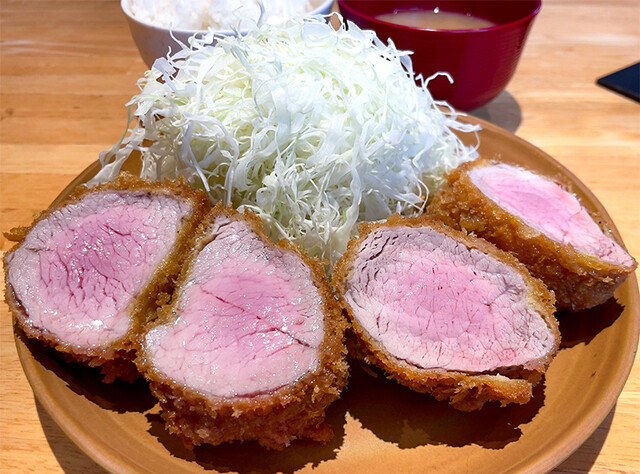
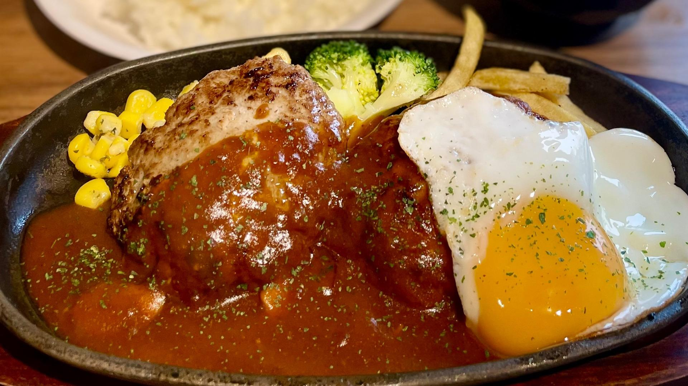
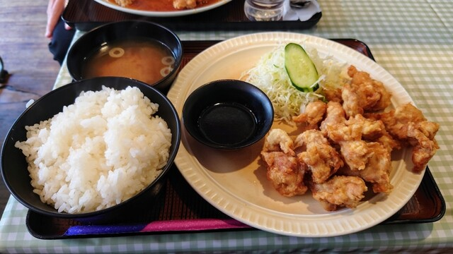

定食
安くてお腹いっぱいになれる定食屋さんを紹介します。
洋食工房パセリ
洋食工房パセリは、その名の通り、洋食メニューが豊富で、特に揚げ物が人気です。店内は、昔ながらの定食屋さんのような雰囲気で、どこか懐かしい気持ちにさせてくれます。
アクセス：愛知県天白区塩釜口2丁目1501 フェイムズ1F
キッチンヒロシ
広々とした店内とゆったりとした席配置が特徴で、JAZZが流れる落ち着いた雰囲気の中で食事を楽しめます。特に焼き飯とチキンカツのコンボが人気を集めています。ライスは大盛無料です。
アクセス：愛知県名古屋市天白区一本松2-506
レストラン金鯱
リーズナブルな価格で、あんかけスパや唐揚げ、駒ヶ根ソースカツ丼、ポークジンジャー定食などが楽しめます。
アクセス：愛知県名古屋市天白区塩釜口2-801